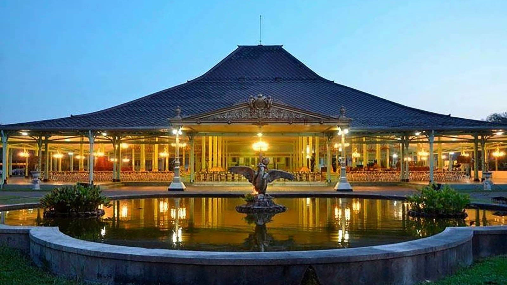
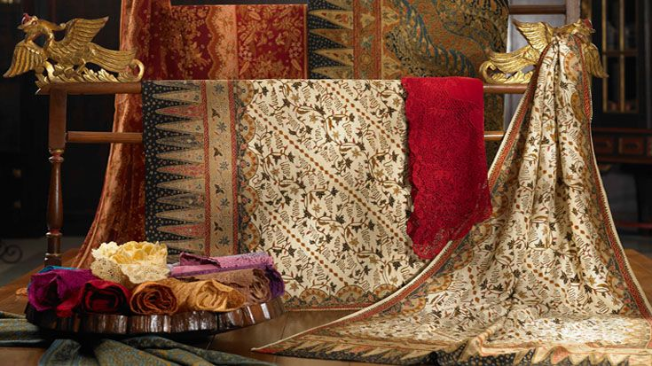
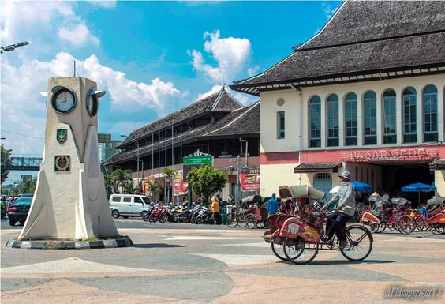

Pura Mangkunegaran

Pura Mangkunegaran adalah istana resmi Kadipaten Mangkunegaran di Surakarta dan tempat tinggal para Adipati Mangkunegaran. Awalnya, bangunan ini merupakan kediaman Patih Sindureja dari Kesunanan Surakarta, yang kemudian diserahkan kepada Mangkunegara I setelah Perjanjian Salatiga tahun 1757. Perjanjian ini juga menandai berdirinya Kadipaten Mangkunegaran, dengan Raden Mas Said (Pangeran Sambernyawa) diangkat sebagai Mangkunegara I. Secara arsitektur, kompleks bangunan Pura Mangkunegaran mirip keraton, mencakup pamédan, pendhapa, pringgitan, dalem, dan keputrèn. Dikelilingi oleh tembok dengan dekorasi bergaya Eropa, bangunan ini mengalami beberapa perubahan yang mengikuti tren saat itu.
Museum Batik Danar Hadi

House of Danar Hadi (HDH) di Solo, Jawa Tengah, adalah kompleks wisata heritage yang menampilkan batik dan aspek budayanya. Didirikan oleh PT Batik Danar Hadi pada 2008, museum ini mematok tiket masuk Rp35.000 untuk umum dan Rp15.000 untuk pelajar.
Notre-Dame Cathedral

Pasar Gede Harjonagoro adalah pasar terbesar di Surakarta, didirikan pada masa kolonial Belanda dan dirancang oleh arsitek Thomas Karsten. Dibangun pada 1930, pasar ini memadukan ar sitektur Jawa dan Belanda. Pasar Gede terdiri dari dua bangunan utama yang dipisahkan oleh Jalan Sudirman, dan menjadi pusat perdagangan di kawasan pecinan Surakarta. Pasar ini pernah mengalami kerusakan akibat serangan Belanda pada 1947, kemudian direnovasi pada 1949. Pada 1999, pasar sempat dibakar saat kerusuhan politik, namun dipulihkan pada 2001 dengan memperhatikan fasilitas bagi penyandang disabilitas. Pasar Gede berada di Jalan Urip Sumoharjo, di depan Balai Kota Surakarta dan dekat dengan Kelenteng Avalokiteśvara Tien Kok Sie.